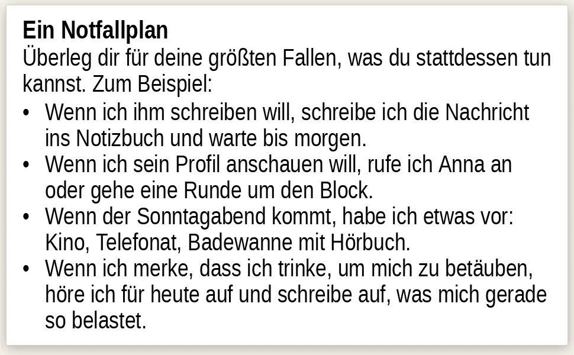
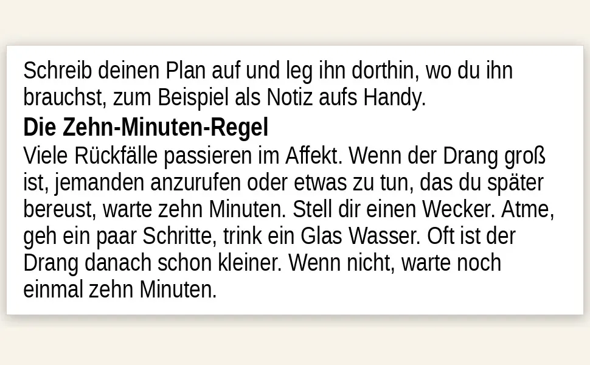

Tschüss Trennungsschmerz
Was nach einer Trennung in dir passiert und was du selbst tun kannst, in deinem eigenen Tempo.
Öffnet amazon.de in einem neuen Tab.
Ein paar gute Tage, dann reicht ein Lied im Supermarkt, und alles ist wieder da.
Das heißt nicht, dass du zurückfällst. Es gehört dazu. Dieser Ratgeber erklärt, was nach einer Trennung in dir passiert, und zeigt dir, was du selbst tun kannst. Du liest in deinem Tempo und nimmst, was dir guttut. Kein Ersatz für eine Therapie.

Blick ins Buch: vorbereitet auf schwierige Momente
Insgesamt gibt es 28 Unterkapitel. In jedem findest du Beispiele in zwei Fassungen: So läuft es oft. So geht es besser. Diese Übung stammt aus dem Teil über Rückfälle.

Blick ins Buch: abwarten, wenn der Drang groß ist
Im Taschenbuch folgt auf jedes Unterkapitel eine Seite mit Fragen und Platz zum Schreiben. Am Ende jedes Kapitels wartet ein Bild zum Ausmalen, wenn du einfach still etwas mit den Händen machen willst.
Dieses Buch ist ein Ratgeber und kein Ersatz für eine Therapie oder Beratung. Wenn es dir gerade richtig schlecht geht, hol dir bitte Hilfe, zum Beispiel bei der Telefonseelsorge unter 0800 111 0 111 (kostenlos, rund um die Uhr).
Öffnet amazon.de in einem neuen Tab.
Passt auch dazu


Mehr zum Thema Beziehung & Liebe
 500 Komplimente für eine liebevolle Beziehung500 Komplimente für deine Partnerin oder deinen Partner, sortiert nach zehn Themen. Aufschlagen, einen Satz aussuchen, fertig.Kommunikation und VerständnisWie ihr besser zuhört, Wünsche klar aussprecht und fairer streitet. Klappt auch, wenn nur einer von euch liest.
500 Komplimente für eine liebevolle Beziehung500 Komplimente für deine Partnerin oder deinen Partner, sortiert nach zehn Themen. Aufschlagen, einen Satz aussuchen, fertig.Kommunikation und VerständnisWie ihr besser zuhört, Wünsche klar aussprecht und fairer streitet. Klappt auch, wenn nur einer von euch liest. Zwischen Alltag und uns140 Gesprächsfragen für Paare, die im Alltagstrubel wieder mehr voneinander erfahren wollen.
Zwischen Alltag und uns140 Gesprächsfragen für Paare, die im Alltagstrubel wieder mehr voneinander erfahren wollen. In 30 Tagen zu mehr Vertrauen in der BeziehungEine Übung pro Tag für Paare, die sich wieder aufeinander verlassen wollen.
In 30 Tagen zu mehr Vertrauen in der BeziehungEine Übung pro Tag für Paare, die sich wieder aufeinander verlassen wollen.